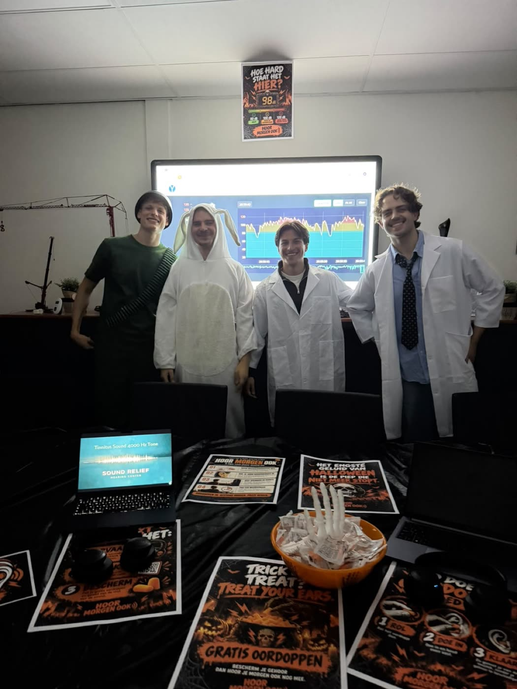

Waarom
Jongeren staan op feesten en festivals urenlang in harde muziek, en minder dan één op de drie draagt oordoppen. Gehoorschade voelt als iets voor later. Wij willen dat het iets wordt voor vandaag.
Over ons
Wij zijn Hidde, Cas, Josh en Tom, studenten Commerciële Economie aan de Hogeschool van Amsterdam. Voor het vak De Maatschappij Ben Jij bedachten we Hoor Morgen Ook: een campagne tegen gehoorschade door harde muziek.

Jongeren staan op feesten en festivals urenlang in harde muziek, en minder dan één op de drie draagt oordoppen. Gehoorschade voelt als iets voor later. Wij willen dat het iets wordt voor vandaag.
Op een Halloweenfeest in Schagen lieten we ±55 bezoekers de piep van tinnitus horen, stelden we vragen over hun luistergedrag en gaven we iedereen gratis oordoppen mee.
Onze partner STFU, een webshop voor diverse producten uit Schagen, stelde de oordoppen en flyers beschikbaar.